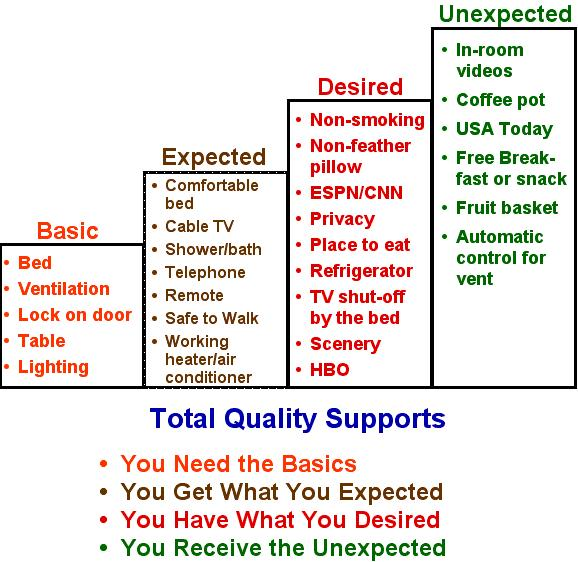
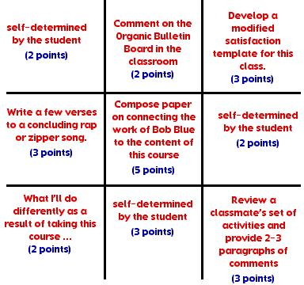
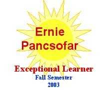
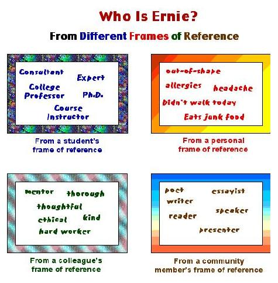

It’s nice to hear an author speak so that I can hear that same voice in my mind as I read his material again.
November 1, 2003
I was looking for the right word for some of the activities I use in my courses. I had called them "ice breakers" and "transition" activities. Then, I uncovered an article from The Clearing House journal, "Mental Aerobics: Just for the Fun of It," and in that article, they referred to such activities as Just For the Fun of It (JFTFOI). I would like to think that many of the mini-activities we do in SPED 501 adhere to benefits of JFTFOI activities as defined by the authors.
|
1) |
They have an impact on memory. |
|
2) |
They offer a balance to the power position of the teacher and the rigor found in traditional classrooms |
|
3) |
The underscore teacher humanness |
|
4) |
They add to the spirit of the class. |
|
5) |
They promote freedom and creativity. |
|
6) |
They encourage a sense of belonging or cohesiveness. |
|
7) |
If they include humor, JFTFOI activities contribute to numerous important classroom characteristics. |
November 2, 2003
As I was cleaning out one of my file drawers I happened upon a report that contained 29 summary statements from a 1989 National Conference on Self-Determination. I include these recommendations below:
|
1) |
The enabling of people with disabilities to determine their own futures be seen as the top priority in all government policymaking functions. |
|
2) |
Advocacy organizations should enable persons with disabilities to testify for themselves at formal government hearings. |
|
3) |
The term least restrictive environment (LRE), now appearing in many federal laws and regulations, doesn't go far enough. |
|
4) |
A program for supporting state and local self-advocacy organizations be developed. |
|
5) |
Grant proposals designed to benefit persons with disabilities should be rated according to how well they include the concept of self-determination. |
|
6) |
A conference of persons with disabilities be called to evaluate and redirect the Rehabilitation Services Administration. |
|
7) |
Grant review team should include persons with disabilities. |
|
8) |
Internships and study fellowships be created that enable persons with disabilities to work and learn in government agencies. |
|
9) |
Persons with disabilities be helped to compile their own oral history. |
|
10) |
A program for reshaping professional attitudes be instituted for those already working in the field. |
|
11) |
Universities reshape their pre-service and in-service training programs to include self-determination as a top priority. |
|
12) |
School programs enable non disabled students and those with disabilities to teach each other. |
|
13) |
Sign language for persons with deafness be taught to non disabled students in elementary schools and be included as a language course in all secondary public school language departments. |
|
14) |
A formal course in human disability be included in the social studies department of public schools. |
|
15) |
Persons with disabilities be provided formal courses in self-assertion. |
|
16) |
Help reinforce friendships between students with and without disabilities. |
|
17) |
People with disabilities be involved in their own program planning sessions. |
|
18) |
Enable persons with all kinds of disabilities to form a national coalition. |
|
19) |
People who have been psychiatrically labeled be included in all coalition efforts and be allowed to represent themselves. |
|
20) |
A series of model programs be funded that exemplify self-determination attitudes and practices. |
|
21) |
State Protection and Advocacy Agencies hire persons with disabilities as community organizers. |
|
22) |
Government should enable electronic and print media to highlight the real disability culture - its positive aspects and its soon-to-be-developed history. |
|
23) |
Bookstores set up a regular section on disability. |
|
24) |
Work for universal design in technology. |
|
25) |
Telecommunication devices for persons with deafness (TDD) have expanded availability and usage, and be more readily identified and understood by all citizens. |
|
26) |
Innovations benefiting people with disabilities (curb cuts, television captions, accessible voter booths, security guards on subways, etc.) be advertised as helping other citizens as well. |
|
27) |
Unfair financial support systems continue to be exposed when they limit the self-determination of people with disabilities. |
|
28) |
Nondisabled persons be helped with the perceived 'inner terror' they experience in the presence of those with disabilities. |
|
29) |
A national research and training center on self-determination be created. |
November 3, 2003
Another Fine Day in Class
We
leave our egos at the door
As together we explore
The wonders of some athletes
And marvel at their awesome feats.
We also witness a slight deception
In a "count the Fs" sentence inspection.
Jaime and David had in store
Movies, videos, films and more.
Annie went to New Jersey in a car
To tape a talk on Autism from afar.
A teacher spoke about a new point system
Developed from years of practice and wisdom.
I heard good comments and conversation
As we continued on in our investigation
To teach all students who are hard to reach
To be consistent and try not to preach.
We honor difference and diversity
As we learn together at the university.
The important part of what we do
Is to test our values both old and new.
Gifts and talents and strengths of all
Are the basics of the teacher's call
To be a model of ethics and light
With each of the students who come into our sight.
November 4, 2003
In one of my courses, I ask that students develop an analogy about working with students with disabilities and a skill/interest they have. Sarah R. developed one creative response that follows:
Working with clay is like working with students with disabilities because . . .
Pulling the clay higher often makes for a beautiful pot -
Just as bolstering the spirits of students with disabilities encourages them to aim higher.
Working with clay is like working with students with disabilities because . . .
With too much prodding the pot can suddenly collapse -
Just as with too much criticism students with disabilities can easily become frustrated.
Working with clay is like working with students with disabilities because . . .
A pot must go through many difficult and risky stages before a positive end result can be achieved -
Just as students with special needs must go through many difficult stages to reach their goals.
Working with clay is like working with students with disabilities because . . .
A potter must be willing to compromise with the clay when making a pot -
Just as teachers must compromise with students with special needs in order to accomplish common goals.
Working with clay is like working with students with disabilities because . . .
A potter must work carefully to ensure that all attachments and connections are strong and will not crack -
Just as teachers must work hard to make connections with students with special needs as well as their families.
November 5, 2003
One way of teaching the strategy of "least prompting" is through use of mental flexibility problems. In a training resource, More Games Trainers Play: Experiential Learning Exercises, Scannell and Newstrom (1983) present a range of hidden clues to common phrases or set of words. For example the arrangement of 26 = L of the A is a code for 26 equals letters of the the alphabet. I have used these puzzles as a way of teaching a "least prompting" sequence of instruction. For example, if someone does not know what the code represents, I might hum the A-B-C song without singing any of the words. However, this might be not result in a person understanding what the puzzle means. I could then add a form of forward chaining to my instruction: 26 equals letters of the A. If this also does not result in a person developing a suitable response I might point to a typewriter or computer keyboard as I repeat the previous instruction. By following this sequence, I have providing increasingly more information when a person is trying to figure out what the natural cue 26 = L of the A means. I then distribute additional number/letter puzzles and have students in my courses develop a sequence of teaching strategies for their peers who cannot figure out what the puzzle represents.
|
7 = W of the A W |
___________________________ |
|
1,001 = A N |
___________________________ |
|
12 = S of the Z |
___________________________ |
|
54 = C in a D (With the J's) |
___________________________ |
|
9 = P in the S S |
___________________________ |
|
32 = D F at which W F |
___________________________ |
|
18 = H on a G C |
___________________________ |
|
3 = B M (S H T R) |
___________________________ |
|
64 = S on a C |
___________________________ |
|
57 = H V |
___________________________ |
|
24 = H in a D |
___________________________ |
|
1 = W on a U |
___________________________ |
November 6, 2003
In supported employment, there is a job development process referred to as "job carving." This technique is employed when a creative job developer investigates all aspects of a work site to "carve out" jobs that may currently be completed by individuals for whom more important duties are preferred. Three examples are included below:
The Pharmacist Experience: I first heard this account from a job developer from Madison, Wisconsin. It appears that she was searching for job leads at a local hospital that seemed to provide a good working environment for a person with a disability in need of employment. She approached a pharmacist who operated the in-hospital pharmacy and asked if she could observe his work during a period of time to gain an understanding of the type of work tasks that went into his position. During the course of conversation and observation, the job developer noted that the pharmacist unpacked many boxes and stacked shelves between filling orders he received from doctors and/or patients at the hospital. She asked him if this part of his work interfered with his more important duties and he replied that it was a necessary part of his work but one that got in the way of completing the activities for which he had been trained to do, namely, filling prescriptions. She later approached the pharmacist and let him know that she had a person who could do the tasks of unloading and stacking items from boxes and it would make his work more efficient. This is an excellent example of job carving from one position.
The Plumber's Assistant: While presenting a seminar in Ohio, I had discussed the concept of job carving with an assistant principal. She immediately saw an application with her husband's line of work. Her husband was a plumber. Whenever he as on a call and obtained some information about what the problem was, he would bring multiple materials and equipment that he may or may not need. He wanted them available in case they were necessary for the job. When he returned to his office, he had the time-consuming duty of restocking the unused equipment and materials for easy retrieval for his next job. She thought it would be more cost efficient to hire a person who really liked to see things in a neat order and knew how to match items to their proper places of storage. This person could be paid at a rate far below that of a plumber who could be out on his next job while the restocking was being completed back at his office.
The Collections Agent: I was observing a worker who received supports from a United Cerebral Palsy agency in Connecticut. I observed an individual who used a modified telephone headset and writing area. This person was responsible for calling delinquent accounts to a newspaper circular that relied on advertisement to print several local area fliers as supplements to newspapers. At first, this position was a volunteer one for which no one else at the business was responsible. But, because the company realized such positive results from an increased cash flow, they made it into a permanent part-time position with pay.
November 7, 2003
It's time for a different way of organizing my notes and priority activities during each day. I'm getting too scattered on where I put my notes especially during this time of student advisement. My pile-litizing works OK but it's time for a new system of operation. Hand in hand with this organization is time management. Here are some tips from reading the advice of Mark H. McCormack.
|
1) |
What can we each learn from advice from a leader from the business community? |
|
2) |
Yellow legal pad with line down the middle. |
|
3) |
Index cards with critical information. |
|
4) |
Individualize your own personal organization system (P.O.S.) |
|
5) |
Savor the easy tasks. |
|
6) |
Plan backwards to keep moving forward. |
|
7) |
Don't try to be a time hero or the hero's victim. |
|
8) |
Work from a realistic To-Do list. |
|
9) |
Transition times: What are they in your work day? |
|
10) |
Letting them in on your secret! |
|
11) |
Scheduling meetings |
|
12) |
Using the telephone
|
|
13) |
Management by Federal Express |
|
14) |
Manage time wisely in and out of the office |
|
15) |
Talk to files |
November 8, 2003
For my class next Monday evening I am going to begin by showing the students a picture of the American Flag for about 10 - 15 seconds. As I'm doing do, I will ask them to state questions that could be asked of their own students about the flag. I expect five of their questions will be:
How many stripes are there?
How many red stripes and white stripes are there?
What colors are in the flag?
What shape is the flag?
How many stars are there?
Next, I will remove the flag from their sight and say that I will ask them a question about their knowledge of the American flag to gain a better understanding of how much they know. My question will be:
What is the arrangement of the rows of stars on the flag; i.e., how many rows are there and how many stars in each row?
My prediction will be that few if any students in this college class will know the correct answer and I will receive 7-8 responses that will be incorrect. I can't remember even when I know the answer to this question!
My point is this. Teachers hold a great amount of power when determining how much a student knows about a specific content area. How relevant was my question toward understanding a student's knowledge of the flag? I chose this question because I thought it would be difficult to answer correctly. I can bring out how much a student does not know by how I frame my question. I want to caution teachers-in-training to be wary of the types of questions they ask both in class and on exams when trying to determine the acquired, relevant knowledge gained by a student.
By the way, the answer to my question, I think, is that there are 5 rows of 6 stars and 4 rows of 5 stars for a total of 50 stars!
November 9, 2003
Little Known Facts About Presenting
|
01) |
Doughnuts: The session may be scheduled for 9:30 am but if the doughnuts aren't there until 9:40 am, you can expect to start at 9:45 am. |
|
02) |
Extension Cord: The extension cord you bring will be about two feet short of reaching the nearest outlet. |
|
03) |
Supplements (Hand-out Materials): If you have enough supplements for 35 people, 38 will show up. If you have enough supplements for 75 people, 8 will show up. |
|
04) |
Music: If you have music cued up on the tape recorder, someone has either put in another tape or fast forwarded it to a new song. |
|
05) |
Priorities: No matter how large the audience, 10% will need to be somewhere else about an hour before the presentation is scheduled to end. This fact also works at church. |
|
06) |
Evaluations: People who rave about your presentation will be the same people who fail to fill out a session evaluation. On the other hand, people who don't like what you say will be sure to complete their evaluations in some detail. |
|
07) |
Allotted Time: You'll have the most number of important things to say in the least amount of allotted time and you'll have less important things to say in the most allotted time. |
|
08) |
Fall Asleep: At some time someone will fall asleep during much of your presentation but will make a specific point to tell you how great you were as a presenter. This one also pertains to church. |
|
09) |
Typpo Error: If there is a typo error in your materials, there is a stronger likelihood that it will be on the cover page or on the first page of your supplements. |
|
10) |
Relatives: Out of 31 participants, 10 will want to be there, 10 don't care, 10 would rather be some place else, and 1 person will be distantly related to you on your mother's side. |
Murphy must have been a presenter!
November 10, 2003
Several years ago I was presenting information on total quality supports and extracted some information to represent four dimensions of services/supports: basic, expected, desired and unexpected. I then developed a diagram for participants to indicate what they would put beneath each of the categories if they were looking at staying at a hotel/motel. The results of one such session is included below:

I would then ask them to use a blank template to look at what parents could expect for their son/daughter with a disability if they were reviewing that person's classroom. What are the basics for the classroom? What should the students and parents expect? What might be some desired elements of the classroom that do not exist in every classroom? What can the teacher do that is unexpected, but appreciated, by the parents?
November 11, 2003
What's the outcome?
I was once asked to present to some middle school students in an after-school program in a nearby city. The topic of my brief talk was on "diversity" and looking at situations from multiple perspectives. I had recently read of the following activity: wrist wrestling.
I asked for two volunteers from the group to engage in a wrist wrestling competition for 15 seconds. I was looking for the most rugged looking youths who could participate in this activity. Two boys stepped forward (Bob and Richard) and I explained that if Bob was able to pin the back of Richard's hand on the table, Bob would earn 1 point. I gave the same directions to Richard. The person with the total number of points would be the winner. I told them to imagine that each point is worth one hundred dollars in prize money. During the next 15 seconds both Bob and Richard struggled to put the back of his opponent's hand on the table. Finally, just before time was up, Bob was able to win and thereby earned the hypothetical $100. I asked Richard how he felt and he told me he felt humiliated and upset because he had lost.
Next, I asked for two more volunteers who did not consider themselves two of the strongest students present. Two more students came forward and I once again explained the rules. This time, however, I explained that if the goal of the activity is "power over" their opponent, then might makes right prevails. There can only be one winner with this attitude. However, if the goal is to see how much money each person can earn in the allotted time, cooperation was needed. I suggested that each opponent let the other person pin her hand to the table quickly and then to reverse the process. In the 15 seconds that ensued, each person was able to pin the other's hand to the table about 10 times, thus each person earned a hypothetical $1,000. I asked them how they both felt and they were excited that they could both obtain a lot of money.
I then debriefed this activity with the entire group. What is the outcome of the activity? If "power over" someone else is the goal, there can only be one winner and the loser walks away humbled, embarrassed and unwilling to participate again in the future. If "mutual benefit" is the outcome, both students should be able to find a way to participate in a way in which both individuals "win." This exercise is not to imply that competition is not good under different circumstances. Rather, there are many opportunities for mutual success in the classroom for students of different abilities who participate in the same activity.
November 12, 2003
Rambling Thought 1: I may have used this comparison before, but as I was reviewing my files in my home office I uncovered a folder dedicated to the Wizard of Oz. I noticed that I had superimposed my own photo in place of the head on the Tin Man. It reminds me of the lyrics: Oz never did give nothing to the Tin Man, that he didn’t already have. The wizard was a fraud! Or was he? He did not have any power to give the scarecrow any additional intelligence. He could only give him something to remind him that he had adequate intelligence all along. He just had to be reminded of this fact. Relating this thought to working with students with disabilities, teachers must interact with their students with respect, persistence, honor, love and an attitude that it is better to find their gifts and build upon them than to try to fix what’s wrong in an attempt to make them “better” people. I do not mean to imply researchers should not seek remedies and cures for illnesses and diseases, but currently we spend too much time and money to continually test students with learning and intellectual disabilities to accentuate what they do not know relative to their peers. Instead, we should put just as much focus and attention on ways to identify what they do know and how they can each excel in their own, unique ways.
Rambling Thought Two: It amazes me how much pressure is placed on beginning teachers to already be at a level of proficiency that is impossible based on limited years of teaching. A teacher of five years of experience should be more accomplished and better able to develop wiser suggestions to current challenges than a teacher with 1-3 years of experience. Similarly, a teacher of ten years should, with the accumulation of additional experiences, be at a different place in his/her ability to develop solutions and responses to difficult and challenging situations in a much more capable way than was possible previously in his/her career. Excellent teaching builds on excellent teaching. We grow and develop in our respective professions based on the combination of experiences, reflection, maturity and the successes/setbacks we bring with us to the current situation.
November 13, 2003
I am reviewing the results of Exam-ination of Content #2 based on the directions I shared in my October 26th entry. The diversity and variety of responses are terrific. This assignment allowed students to make critically important connections among the five most important aspects of the course thus far and many of the elements that I thought important are coming out in their writing and summaries. One student, an art education major, produced a copper wire figure of a person scaling a rock with the word "determination" written on the rock. I placed it high up in the corner of the classroom to await any reaction from students who may notice it when I ask for how the atmosphere has been altered in the classroom.
As our School of Education and Professional Studies (SEPS) at CCSU is engaging in a strategic planning process I am wondering what future roles both I and members of the department can play that may differ from today's work activities. For example, I envision that a Center for the Enhancement of Transitions from School to Adult Life (CETSAL) might be established. Some of my current work advocating for parents and/or school districts could be incorporated into such a Center. Our department could conduct seminars and training sessions for both parents and adolescents with disabilities about helping them take more ownership of the planning process.
During a recent class, I mentioned to the students that the next set of readings that I planned was in the area of "teaching wisdom" as explored by Robert Sternberg. One of the students in my class, Stephanie, found the following links when she entered "Sternberg" and "wisdom" in her search for resources.
www.psy.pdx.edu/PsiCafe/KeyTheorists/Sternberg.htm
books.cambridge.org/0521367182.htm
www.findarticles.com/m1175/n3_v31/20526121/p1/article.jhtml
www.apa.org/monitor/inspiring.thml
www.ahea.org/Teaching_For_Wisdom.htm
November 14, 2003
Today I listened to Parker Palmer, who presented at the New England Faculty Development Consortium, in Westford, MA. This is the first time I had heard him although I have read three of his books. I will probably go back and make several comments about my participation after looking through my notes. To begin with I am including the information from the first page of his visual supplement that was part of our packet of information.
To teach is to create a space in which the community of truth is practiced.
Good teaching can never be reduced to technique. The key to good teaching is a “capacity for connectedness," which comes in many forms.
Parker Palmer asked that we discuss in small groups how one or more of the following statements influence how we conduct ourselves at our respective colleges and universities.
|
1) |
The brain’s weakest function is retaining isolated data bits, while its strongest function is holding and working with information in patterns of meaning: narratives, stories, systems, gestalts, etc. |
|
2) |
Cognition is intimately tied to the emotions, which can either undermine cognitive functioning (e.g., through fear), or strengthen it (e.g., through caring about something). |
|
3) |
Since all of us thinking together are smarter than any one of us thinking alone (given good ground rules), communities that invoke “multiple intelligences” can help us learn. |
|
4) |
The most engaged learning communities are those that gather around a vivid and (morally) compelling reality, or representation of that reality, not around “inert facts." |
|
5) |
Knowing in any discipline is a communal (not individual) act, requiring habits of the heart and the mind that allow us to participate in disciplined interactions and exchanges with fellow knowers and with the thing known. |
November 15, 2003
Some additional notes from the presentation by Parker Palmer are included below:
|
|
It’s nice to hear an author speak so that I can hear that same voice in my mind as I read his material again. |
|
|
He uses the image of a loom and we weave the strands of truth about a specific topic of focus. The reward is in seeing the fabric emerge in such a way that the current group of students influences it and this fabric could not be produced by any other group of students. |
|
|
Great teachers vary in their techniques of teaching but they all share a “passion” for teaching. |
|
|
The practice of lecturing at universities is greater than the gift for it. |
|
|
At my age, a couple of years ago can mean anything from 2-15 years! |
|
|
When a student presents feedback that is opposite to what the instructor intends, especially in an area of values and ethical behavior, rather than react out of fear and judgment, respond out of curiosity and look at this occasion as an opportunity to find out why the person feels/thinks this way. |
|
|
Palmer, when discussing his ability to speak his mind as he nears his retirement from more frequent speaking engagements, quoted that famous philosopher Janis Joplin, freedom’s just another word for nothing left to lose. |
|
|
Much of the dissatisfaction that occurs within the culture of higher education rests in the lack of “good talk about good teaching." |
All in all, the information Parker Palmer shared originates from much of his writing that I have read. However, hearing him tell the stories firsthand was well worth the trip to the conference and to be among colleagues who value the message of his work.
November 16, 2003
I continue to reflect on the work of Parker Palmer as I review chapters from a book that was part of a book club in which I participated last semester: Stories of the Courage to Teach edited by Sam Intrator. As I go through the book this evening the following quotes attract my attention from a chapter by Marcy Jackson and Rick Jackson, pp. 283-308.
. . . we teach who we are (p. 288). This reminds me of the comment by Palmer when he describes good teaching being at the intersection of one’s identify and integrity – or a similar image. I wonder about the way in which I am forming the SPED 501 course each semester. I leave part of me with each group and I express myself differently with each group based on their collective wisdom, the atmosphere created by the collective wisdom and the contributions from each person that I have never encountered before. Each session energizes me to think differently about the knowledge I have within my discipline. I am continually reforming “truths” based on the conversations that occur in my courses. As I look back on my debriefing notes when courses are in session, I can mark the progress of the path of my current values. I am all the more eager to collect these thoughts and share them with others as I read about their own reflections when engaged in a community of truths. I would like to propose a course at the graduate level in which we use The Courage to Teach as a primary text for returning teachers to have a conversation with colleagues. The conversation would take multiple forms based on the make-up of the class. I think this would be appropriate for the summer and I’ll approach the chair of teacher education to see if this makes sense to her.
. . . the work of human formation is much more akin to farming or gardening than it is to manufacturing (p. 292). I like this choice of words, human formation, to describe my role as a facilitator of learning in my courses. Students take courses to study a body of knowledge and enter into dialogue with others about the focus of the course. In doing so, they are continually adding to their “formation” of what it means to be a teacher. This process is never ending and I can point to myself in this regard. I am constantly seeking different “truths” about the art of teaching. As I engage in my profession I connect with other parts of who I am. Teaching allows me to use my gifts in a way of mutuality toward achieving interdependence on our life’s path. I can arrange the activities of the course much as a gardener arranges the ingredients of the garden. I can provide a nurturing environment in which each student flourishes and brings his/her unique contributions to the course. This is an exciting, challenging endeavor.
. . . when we are in touch with our own giftedness, we are much more likely to notice and draw out the gifts in others - (p. 299). I also echo this sentiment from the perspective of the teacher – student relationship. In each interaction we are both teacher and student sharing our gifts with each other. The giftedness template at the very beginning of SPED 501 is the introduction to this concept. Demeaning labels tend to mask one’s gifts. Assessments are much better at identifying one's weaknesses and deficiencies than one’s capacities, strengths and gifts. Teachers should enhance the learning community so that each person can shine in the direction of his/her gifts. The whole community benefits.
November 17, 2003
The following responses resulted from a brainstorming session to answer the question: What are different ways that communication can be enhanced at my school?
|
|
Trust goes both ways. Both administrators and teachers must have trust for the other's abilities and commitment. |
|
|
Communication among school personnel may be influenced by the differences in backgrounds, education, gender, culture and other areas. (See You Just Don't Understand by Deborah Tannen as an interesting approach to understanding different styles of communication between the genders.) |
|
|
Active listening is a skill to be enhanced to reduce interruptions among team members that may cause irritation and/or a lack of personal consideration. |
|
|
The format of good communication is based on the belief that the system actually works. |
|
|
It depends on with whom you are speaking and whether written or oral forms of communication provide the best avenue of interaction. |
|
|
Good communication occurs based on your experiences with whom you are working. |
|
|
A sense of being in or out of control influences the sense of good communication among school personnel. |
|
|
Make sure your message is clear and ask for verification by requesting the receiver to repeat the message using different words. |
|
|
There is a difference between wants and expectations. |
|
|
Do unexpected changes occur frequently? Are teachers told to react one way to a challenge one day and then to react differently the next day? |
|
|
Keep the communication clear and well defined. Vagueness in communication leaves the receiver open to his/her own interpretation. |
|
|
Sometimes, the provider of communication does not think before talking. If they would think first, more concise and clear words would be used to better communicate the message. |
November 18, 2003
When organizing a presentation on Community Supports, I developed the following visuals in the form of Commandments for when we work with parents and family members in helping family members form more meaningful connections in their communities.
|
First Commandment |
|
Trust in Yourself. |
|
Professionals
don't know best. They have
opinions |
|
Second Commandment |
|
Go search for the good people of the community. |
|
They
are out there but may not come forth |
|
Third Commandment |
|
Forget most of what you think you know. LISTEN! |
|
Create
a space in which parents and family members can |
|
Fourth Commandment |
|
Celebrate successes. |
|
It
is important for people to meet often and celebrate the successes an
individual makes in his/her progress |
|
Fifth Commandment |
|
Become a member of associations and clubs. |
|
The
more connected you are in the community, the more |
|
Sixth Commandment |
|
Crowd out negativity with positive experiences. |
|
We
need to find those places, environments and situations |
|
Seventh Commandment |
|
Brainstorm creatively. |
|
A facilitator of the brainstorming process brings out the wisdom among the collective members of a group. The manner in which the questions are posed result in a more creative experience. |
|
Eighth Commandment |
|
Be a lifelong learner. |
|
The
more we know, the more we realize how much more |
|
Ninth Commandment |
|
Stand beside, walk with, but don't lead. |
|
When fostering an environment that leads to empowerment, we should suggest and reinforce strategies and ideas but individuals and their family members should do the leading ahead. |
|
Tenth Commandment |
|
Find
out how well you're doing from the point of |
|
Allow for frequent feedback from those individuals for whom you provide assistance and supports. Ask, in a variety of ways, how satisfied they are with the direction, momentum and focus of our efforts. Don't wait until a crisis results in an explosion of dissatisfaction. |
November 19, 2003
This evening I had the honor of listening to a presentation by Victoria R. and her father Howard R., who were guest presenters in the course currently being taught by my friend and colleague George Ducharme. Victoria eloquently identified her current experiences that bring quality to her life. At the age of 19 she currently participates in courses and events on the campus of Fairfield University. Victoria and her father represent the future for how supports and services ought to look for individuals making the transition from school to adult life. One of the best environments within which to experience activities during this transition is on a college or university campus. I will ask Victoria if I can link a copy of her speech to this entry in my essays. Last summer I envisioned a sequence of classes in a course titled "Advocacy and Self-Determination from the Perspective of Students and their Families" but it was cancelled due to lack of enrollment prior to the beginning of the summer session. I need to advertise such an offering for next summer and make another go of it. Victoria would certainly be one of the presenters who I would invite to be one of the instructors.
November 20, 2003
The following ten ingredients were inspired by the publication, Collaborative Teams for Students with Severe Disabilities: Integrating Therapy and Educational Services by Beverly Rainforth, Jennifer York and Cathy MacDonald (1992). I wrote the statements in the form of a check list that teams could use when deciding if they truly had a collaborative team according to the values inherent in the statements.
|
|
Only those individuals who know the focus person well are invited members of the decision-making team. |
|
|
Decisions are made based on a consensus approach with equal weight given to each member's input. |
|
|
A facilitator is appointed to help maintain a steady flow of discussion, encourage participation of all team members, and summarize the decisions of the team. |
|
|
The central most important purpose of the team is to identify supports and corresponding strategies that allow the focus person an enhanced quality of life. |
|
|
Quality of life is defined differently from the unique perspective of each focus person. |
|
|
A unique profile of the focus individual is presented to team members in such a way that a positive, up-to-date account of that person's list of capacities is known to all present. |
|
|
Supports are first investigated that are generic, community-based in nature before more formalized, agency-directed assistance is sought. |
|
|
The focus person maintains an active voice in the team process either by his/her physical presence or that of a close ally. |
|
|
The success of the teams' efforts is determined by established measures of evaluating the focus person's attainment of his/her quality-of-life outcomes. |
|
|
All members of the collaboration team benefit by their involvement in the brainstorming process and as a direct benefit, their own quality of life is enhanced by their active participation. |
November 21, 2003
One of the aspects of teaching the same course repeatedly throughout the year is the chance to update and revise visual templates that evolve over time. One such template is the modified introduction mandala template: I decided to modify the mandala template I used for the introduction of students in the course. I like the added color. This provides an example of the changes that occur when I bring visuals out of retirement from my files and see what a new set of students do with them. Compare this version with a previous draft. The normalcy quotient underwent a similar change and will probably continue to do so for as long as I use it as one of the activities in SPED 501.
November 22, 2003
At work, when the chairs of the departments meet to discuss current issues with the Dean, we often have lunch, which typically consists of a salad and "wrap" sandwiches. Since I am vegetarian, I like the veggie filled wraps, but the wraps do not meet with equal satisfaction among all my peers. So - - - I decided, upon the suggestion of a colleague, to write the following:
The "Wrap" Rap
When
we have a meeting
It has to always include
A sandwich called a wrap
As part of all the food.
There
could be a nice salad
Or something good to drink.
But without a wrap sandwich
The meal will really stink.
Some
wraps have veggies
Some wraps have meat
But a meal without wraps
Is a meal that's incomplete.
Some
people may object.
And want more variety
But give me my wrap
In all its simplicity.
The
next time we meet
We can all learn to adapt
And we know that for lunch
We'll get our very own wrap.
November 23, 2003
One of my peers, Joan Nicoll-Senft, shared a template for providing choices among activities in a class using the Think-Tac-Toe diagram. That is, a student must choose a set of three activities that go through the middle section, but may decide his/her own combination of three activities. The only exception is that all students must do the activity in the center. I have decided to use this template for the final examination in SPED 501 using Bob Blue's video, What Matter's as my culminating activity. Previously, in similar courses, I started off with this video, but for this class I want to end with the video. I am curious how the participants in this course see the traits and qualities of a mentor teacher in the work of Bob Blue. The self-determined squares allow the participant to be creative in developing an activity that best represents a strength they bring to the class and that they can use as a way of connecting to part of the course.

November 24, 2003
I was looking for some light reading over the Thanksgiving holidays and my daughter, Natyra, provided just what I needed: The Phantom Tollbooth by Norton Juster. I'm not sure how I missed this book as a child and it appears to be a popular book in many households. I was ten years old when it was first published. It is interesting reading a children's book from the perspective of an older adult. I will put this book on my Christmas list. As I begin the first few chapters and continue throughout the book, the following quotes/sections stand out:
|
|
Welcome to Expectations |
|
|
the whether man - There are no wrong roads to anywhere. |
|
|
. . . expectations is the place you must always go to before you get to where you're going. Of course, some people never go beyond expectations . . . |
|
|
. . . whether or not you find your own way, you're bound to find some way. If you happen to find my way, please return it, as it was lost years ago. |
|
|
Expect everything, I always say, and the unexpected never happens. |
|
|
What can you do in the Doldrums? - Anything as long as it's nothing, and everything as long as it isn't anything. |
|
|
In one section of the story Milo is in a wagon and asks how it operates. He is told to be quiet because . . . it goes without saying! |
|
|
Besides, being lost is never a matter of not knowing where you are; it's a matter of not knowing where you aren't - and I don't care at all about where I'm not. |
|
|
. . . but, as you know, the most important reason for going from one place to another is to see what's in between . . . |
|
|
If you only do the easy and useless jobs, you'll never have to worry about the important ones which are so difficult. You just won't have the time. For there's always something to do to keep you from what you really should be doing. . . . |
|
|
You must never feel badly about making mistakes, explained Reason quietly, as long as you take the trouble to learn from them. for you often learn more by being wrong, for the right reasons than you do by being right for the wrong reasons. |
|
|
. . . but it's not just learning things that's important. It's learning what to do with what you learn and learning why you learn things at all that matters. |
|
|
. . . but you had the courage to try; and what you can do is often simply a matter of what you will do. |
|
|
. . . but if we'd told you then (that your trip was impossible), you might not have gone - and, as you've discovered, so many things are possible just as long as you don't know they're impossible. |
November 25, 2003
Some of the highlights from this current course that sheds light on the winter session offering of SPED 501 include the following:
|
1) |
Small Group Work: Institute more group activities in which students are randomly divided into groups of 3-4 participants. Last night during the "toolbox" activity, I noted good interchanges of ideas among students. Since John and I will be team teaching the course, we can arrange for 2-3 small group exchanges throughout each block of five-hour sessions. |
|
2) |
Segments of Video: I have found that showing a video of 45 - 50 minutes is not an efficient use of class time. Dividing the video up into 10 - 12 minutes segments and showing each segment at specified intervals throughout the session is worth exploring. Or, just showing a sampling of 5-8 minutes followed by a general explanation of the content from the rest of the video. Last evening, I showed parts of the Noggins video, A Walk In My Shoes, and a segment of F.A.T. City. I like the idea of loaning the video to an interested student if s/he wants to watch the entire video. |
|
3) |
Organic Bulletin Board: I like how this has taken shape throughout the semester. I think I will propose the same project for the winter session and see how it evolves as well. I will take some digital pictures to link to a current session. |
|
4) |
Read First-Person Stories: It appears that there are interesting first-person stories associated with many parts of the content as evident by the story Peter read in class. His short essay originated from a web site devoted to stuttering. |
|
5) |
Tonight's Class is Brought To You By the Letter "N": One of the assignments in class is for students to use the alphabet as a graphic organizer to include words that represent key areas of focus in the class. I would like to use this Sesame Street idea and use a letter for each class and highlight 4-5 concepts that begin with that letter. |
November 26, 2003
Each semester I try to do something different at the end of the course as a special concluding activity or unique contribution I can make to this specific class. This semester I decided to make a refrigerator magnate for each student with their name on the front above the words "Exceptional Learner". I want to impress upon them that the students they teach are "regular" students regardless of what labels have been given to them by the school system. However, the future teachers who are taking this course are the Exceptional Learners as they investigated ways to think differently about the diversity of students they will encounter in their classrooms. I hope they like them. My daughter, Natyra, gave me the idea based on some projects she was working on.

November 27, 2003
I was requested to lead a discussion at an adult service agency on the topic of person-centered planning for facilitators of this process. The notes below evolved out of that discussion and are worth sharing.
|
1) |
Avoid making lists of likes/dislikes and strengths/weaknesses.
|
|
2) |
Limit formal, written question and answer format of surveys.
|
|
3) |
Use language that is more familiar to the focus person and his/her family and/or allies.
|
|
4) |
One of the best ways to find out about a person is to help a family member tell the history of the focus person.
|
|
5) |
Separate the whole picture (outcomes) from the details (process).
|
|
6) |
Clarify feedback with adjectives/descriptors about what the outcomes really mean.
|
|
7) |
How well do you know the community in which a person lives/works?
|
|
8) |
How comfortable are family members about giving you feedback about their satisfaction with the person-centered planning process?
|
November 28, 2003
When talking to the future teachers of students with disabilities, I emphasize the importance of using precise language when writing reports or providing a summary of behavior excesses a student may exhibit. One activity that helps highlight this skill involves the following ten words:
|
hardly ever often sometimes a lot mostly never |
seldom now and then almost all the time once in awhile a little bit of the time |
I then asked a question similar to: You are talking to a person and they remark, " I __________ drive over the speed limit!" What percentage of the time are they talking about for each of the words in the list above?
My guess is that if you have a group of 25 teachers there will be a range of responses for each of the qualifying words depending on what those words mean for each individual.
A second question follows with the same request: Out of a hundred times at bat, how many hits does a baseball player make when he hits _____________? (You may need to adjust the position of the blank depending on which words in the list above are used.)
When a student in my class asked why this exercise was important I responded that if we want to gauge how successful our strategies are in changing a specific behavior in our students, we need to stay away from words that tend to be vague in what they convey to others.
November 29, 2003
I often think that many people view the students we teach from different frames of reference and tend to react to specific students accordingly. Below are four different frames of reference through which I might be viewed. I am all the attributes below, but when a person "frames" me by using a specific cluster of similar characteristics, it flavors how s/he will interact and/or support me. The word "frame" can have both a positive and negative meaning. "He was framed!" tends to evoke a negative feeling that a person was "set up" or "put in a negative light." We can also frame a person by the way in which an assessment instrument is used and what we do with the results. We can frame a student by taking into consideration the cultural influences in that student's life and how we, as teachers, show respect for cultural expectations and traditions. In what way are people "framing" the students for whom you provide supports?

November 30, 2003
I like sharing my writing with students so they know the areas that occupy my attention at this point in my life. I can explain how I think differently about issues and how I may have changed my mind since I was the age at which many of them are right now. I am glad that I had some of the experiences in my past that were perhaps less than ideal places to work because they have helped to bring me to my current work of immense satisfaction. The students also help me to clarify my thoughts similar to the activity I proposed in the previous entry on November 29th. As I reviewed this activity one student remarked that often she will start a parent conference by identifying those attributes and qualities of a student that impress her and how delighted she is that their son/daughter is a member of her class. By doing do, the concerns she has and assistance she seeks about other aspects of the student, which may require mutual cooperation, will be received in a much more favorable light. She is definitely framing the child's attributes in a positive direction. Someone else remarked that a student can come to class in a particular "frame of mind" and be influenced by how the teacher "frames the activities of the day" to be a more inviting learning environment. We also entered into a conversation about how to phrase behavior in a more positive way when talking to parents. For example, we might describe a child as having lots of excess energy instead of a person who is hyperactive. I believe that a parent may be more likely to listen to some suggestions when it is "framed" as strategies that can provide outlets for excessive energy rather than if that same behavior was "framed" as a behavioral program to limit out-of-seat behavior. Finally, the way in which we frame our students when in the teacher's lounge or during informal conversations with our peers creates an image that could influence how others interact with our students in out-of-class experiences. We must be careful not to create frames of reference that accentuate the negative when a rephrasing of descriptors may lead to an entirely different impression. Is the glass half empty or is it half full?
{kind=link}